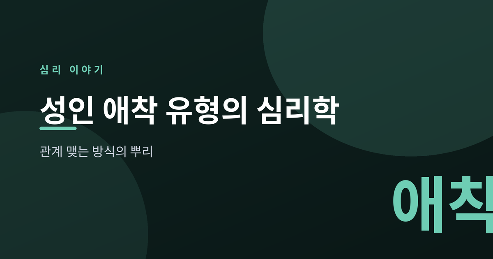
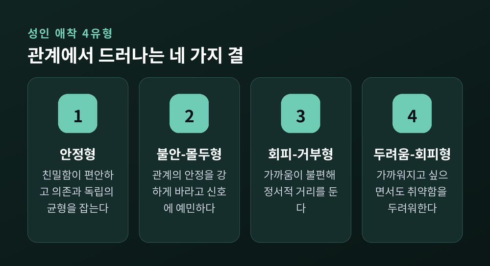
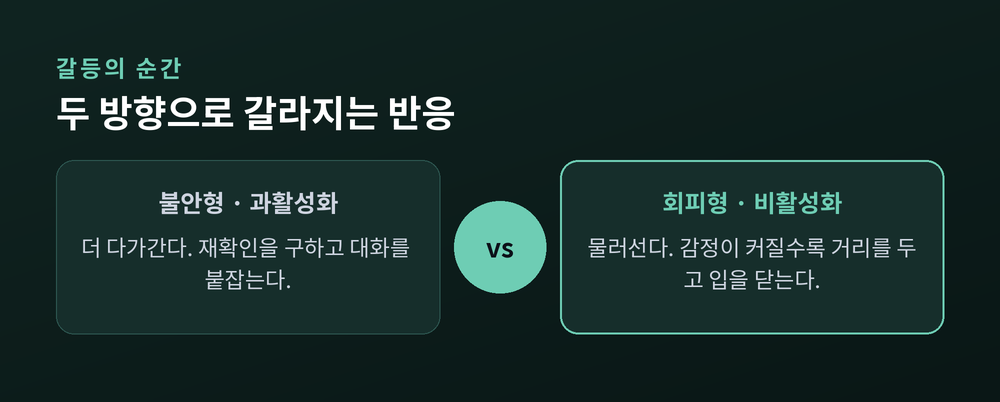
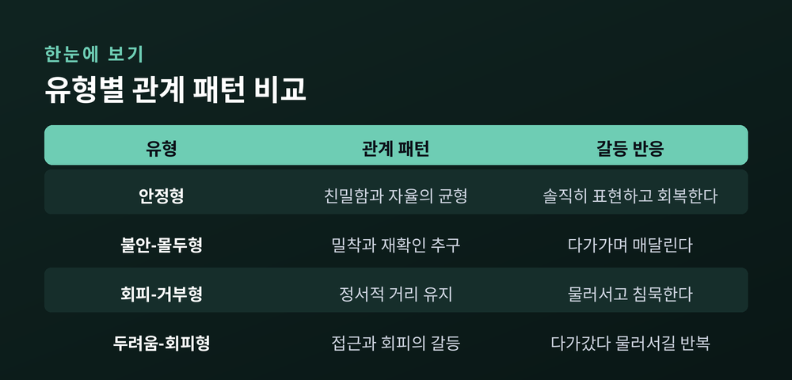
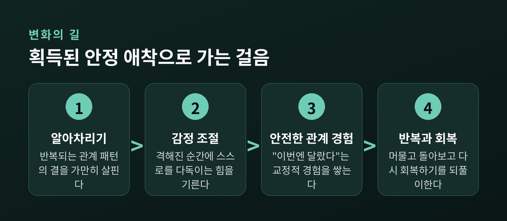

이번 글에서는 성인 애착 유형을 정리해 보겠습니다. 우리가 사람과 가까워지고, 다투고, 다시 화해하는 방식에는 저마다의 결이 있습니다. 그 결이 어디에서 왔는지, 그리고 바뀔 수 있는지를 심리학의 눈으로 차분히 살펴보려 합니다. 시작에 앞서 한 가지만 짚겠습니다. 이 글은 특정한 누군가를 진단하기 위한 것이 아니라, 관계를 이해하는 틀을 함께 들여다보기 위한 것입니다.
애착이라는 개념의 뿌리에는 두 사람이 있습니다.
한 사람은 영국의 정신과 의사 존 볼비입니다. 그는 어린아이가 양육자와 맺는 관계가 이후 삶의 정서적 토대가 된다고 보았습니다. 애착 이론의 기초 개념 대부분이 그의 임상 경험에서 나왔습니다.
다른 한 사람은 발달심리학자 메리 에인스워스입니다. 그는 1950년대 초 볼비의 연구실에서 일하며 40년에 걸친 협업을 시작했습니다.
에인스워스가 남긴 유명한 실험이 '낯선 상황'입니다. 생후 한두 살 된 아기를 양육자와 잠시 떨어뜨렸다가 다시 만나게 하면서, 아이가 부모를 '안전 기지'로 어떻게 쓰는지 관찰한 연구입니다. 스트레스를 조금씩 높여 가며 아이의 반응을 지켜본 것이지요. 이 관찰을 통해 그는 아동의 애착을 안정형과 두 가지 불안정형으로 나누었습니다. 원래 연구에서 가장 흔했던 유형은 '안정'이었습니다.
여기서 중요한 생각 하나가 자랍니다. 반복된 상호작용이 마음속에 일종의 '관계 지도'를 그리고, 그 지도가 훗날 사람을 대하는 방식의 밑그림이 된다는 것입니다.
처음 애착 이론은 아이와 부모 사이를 설명하는 이론이었습니다.
이것을 어른의 연애 관계로 옮겨 온 사람이 하잔과 셰이버입니다. 이들은 1987년, 어른이 연인과 맺는 애착의 과정이 아기와 양육자 사이의 과정과 본질적으로 닮았다고 제안했습니다. 처음에는 세 가지 유형으로 정리했습니다.
여기에 한 겹을 더한 이들이 바솔로뮤와 호로위츠입니다. 1991년, 이들은 '나 자신을 어떻게 보는가'와 '타인을 어떻게 보는가'를 각각 긍정과 부정으로 나누어 네 유형을 만들었습니다. 오늘날 우리가 말하는 성인 애착 4유형은 대체로 이 틀에서 왔습니다.

성인 애착은 흔히 네 가지로 이야기됩니다. 다만 이것은 사람을 가르는 상자가 아니라, 관계에서 드러나는 '경향'에 가깝습니다.
안정형은 친밀함을 편안하게 여깁니다. 기대는 것과 홀로 서는 것 사이에서 균형을 잡습니다. 감정을 솔직하게 꺼내고, 상대에게 기대면서 상대도 자신에게 기대게 합니다.
불안-몰두형은 관계 안에서의 안정을 강하게 바랍니다. 상대의 관심과 반응이 불안을 달래는 약처럼 느껴집니다. 지지가 부족하다고 느끼면 더 매달리게 되고, 관계를 위협하는 작은 신호에도 예민해집니다.
회피-거부형은 가까움을 불편해합니다. 정서적 거리를 두는 편이 안전하게 느껴집니다. 그래서 깊은 관계를 맺는 일이 어렵게 다가올 수 있습니다.
두려움-회피형은 가까워지고 싶으면서도 취약해지는 것을 두려워합니다. 다가가고 싶은 마음과 물러서고 싶은 마음이 함께 있어, 관계에서 종종 흔들립니다.
한 가지 덧붙이면, 통계상 성인의 약 절반 이상은 안정형에 가깝다고 추정됩니다. 여러 나라의 대규모 조사에서 대략 58% 안팎이 안정으로 나타났습니다. 다만 이 수치는 측정 방식에 따라 오르내리므로 '대략의 경향'으로 받아들이는 편이 좋겠습니다.
그리고 오해 하나를 풀어 두고 싶습니다. 안정형이라고 해서 갈등이 없거나 늘 성숙한 것은 아닙니다. 불안형이나 회피형이라고 해서 관계에 서툰 사람인 것도 아닙니다. 유형은 우열의 등급이 아니라, 안전을 확보하려는 저마다의 오래된 방식입니다. 누구나 상황에 따라 여러 색깔을 오가기도 합니다. 그러니 자신이나 상대에게 하나의 이름표를 단정적으로 붙이는 일은 조심스러웠으면 합니다.
애착 유형이 가장 선명하게 드러나는 순간은 갈등할 때입니다.
불안형은 위기 앞에서 더 가까이 다가가려 합니다. 재확인을 구하고, 대화를 붙잡습니다. 심리학에서는 이를 '과활성화'라고 부릅니다.
회피형은 반대로 물러섭니다. 감정이 커질수록 거리를 두고 입을 닫습니다. 이것은 '비활성화'라고 합니다.

문제는 이 둘이 만났을 때입니다. 불안형이 다가갈수록 회피형은 갇힌 느낌에 더 물러나고, 회피형이 물러날수록 불안형은 방치된 느낌에 더 매달립니다. 서로가 서로의 반응을 부추기는 셈입니다. 한쪽은 늘 경계 태세에, 다른 한쪽은 늘 차단된 상태에 머뭅니다.
이 악순환은 지켜보는 사람에게도 안타깝습니다. 그러나 연구자들은 분명히 말합니다. 이것은 성격의 결함이 아니라 '패턴'이며, 패턴은 다룰 수 있습니다.

애착은 연인 사이에만 머무르지 않습니다.
부부 관계에서는 갈등을 다루는 방식과 친밀함의 온도를 조절합니다. 양육에서는 한 걸음 더 나아갑니다. 부모의 애착 경향이 양육 태도에 배어들어 아이의 애착에 영향을 줍니다. 이것을 '세대 간 전이'라고 부릅니다. 안정적인 부모가 더 민감하고 반응적으로 아이를 돌보는 경향이 있다는 연구가 있습니다.
다만 이 흐름을 '대물림된 운명'으로 읽지는 않았으면 합니다. 경향은 경향일 뿐, 사람과 상황에 따라 얼마든지 달라집니다.
가장 위로가 되는 대목은 여기입니다.
예전에는 애착을 어린 시절에 굳어져 평생 가는 것으로 여기기도 했습니다. 지금의 연구는 조금 다르게 말합니다. 애착은 어른이 된 뒤에도 변할 수 있습니다.
심리학에는 '획득된 안정 애착'이라는 표현이 있습니다. 불안정한 어린 시절을 보냈더라도, 성인기에 새로 안정적인 관계 방식을 길러 내는 것을 뜻합니다. 열쇠는 세 가지입니다. 자신을 돌아보는 성찰, 감정을 다스리는 힘, 그리고 안전한 관계를 반복해서 경험하는 일입니다.

뇌는 어른이 되어서도 새로운 길을 냅니다. 안전한 관계 속에서 '이번엔 달랐다'는 경험이 쌓이면, 마음의 지도도 조금씩 다시 그려집니다. 이런 교정적 경험은 흔히 상담 관계에서 일어납니다. 신뢰가 쌓이는 데 시간이 걸리므로, 꾸준한 만남이 도움이 됩니다.
애착의 안정은 타고난 DNA가 아닙니다. 관계 속에 머물고, 돌아보고, 다시 회복하는 그 힘으로 '얻어 내는' 것에 가깝습니다.
정리하면 이렇습니다. 우리가 사람을 대하는 방식에는 오래된 뿌리가 있지만, 그 뿌리가 미래까지 결정하지는 않습니다.
"관계 맺는 법은 배워 온 것이고, 그래서 다시 배울 수 있습니다."
혹시 지금 어떤 관계 패턴이 자꾸 되풀이되어 힘드시다면, 스스로를 탓하기보다 그 패턴의 결을 가만히 들여다보시길 권합니다. 그리고 그 어려움이 오래 이어진다면, 전문 상담사나 심리상담 기관의 도움을 받아 보시길 권합니다. 혼자 감당해 온 무게를, 함께 나눌 수 있는 자리는 분명히 있습니다.